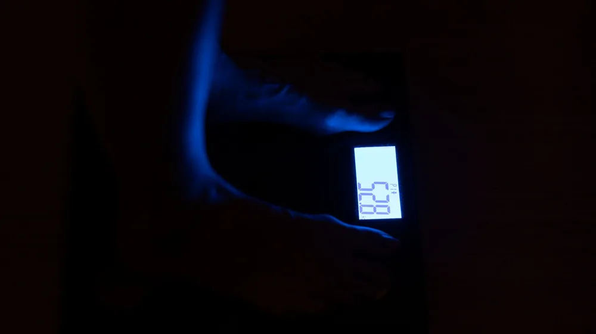
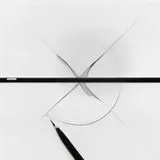

살이 왜 안 빠질까? 다이어트 정체기 탈출하는 5가지 체크리스트
사진: Alesia Kozik / Pexels (무료 이미지, 출처 표기)
1. 진짜 정체기일까? '가짜 정체기' 판별법

열심히 식단을 지키고 땀 흘려 운동하는데도 일주일 넘게 체중계 바늘이 움직이지 않나요? 다이어트를 하는 사람이라면 누구나 한 번쯤 겪는 정체기(Plateau)는 사실 지극히 자연스러운 신체의 방어 기전입니다. 우리 몸이 줄어든 체중에 적응하며 에너지를 아끼려는 대사 적응(Metabolic Adaptation) 상태에 들어섰기 때문입니다.
하지만 많은 사람이 체중계 수치만 보고 정체기라 오해합니다. 근육이 늘고 체지방이 줄어드는 시기에도 수분 보유량 변화 때문에 몸무게는 일시적으로 정체될 수 있습니다. 이를 판별하는 가장 확실한 방법은 거울을 통한 눈바디(체형 변화)와 신체 사이즈 측정입니다.
최소 2주 이상 체중 변화가 전혀 없고 허리둘레 등 신체 사이즈에도 변화가 없다면 진짜 정체기로 볼 수 있습니다. 반면 몸무게는 그대로인데 바지 핏이 여유로워졌다면 다이어트가 아주 잘 진행되고 있는 상태이니 안심하셔도 좋습니다. 대한비만학회의 가이드라인에 따르면, 일반적으로 건강한 체중 감량 속도는 일주일에 0.5kg에서 1kg 내외가 적당합니다.
2. 식단 리셋: 나도 모르게 먹는 '숨은 칼로리' 찾기
우리는 자신도 모르게 적지 않은 칼로리를 추가로 섭취하곤 합니다. 샐러드에 듬뿍 뿌린 드레싱, 아침에 무심코 마신 라테 한 잔, 요리하며 맛본 한 입 등이 모여 감량 정체기를 만듭니다. 적게 먹는다고 생각하지만 실제로는 유지 칼로리만큼 먹고 있을 가능성이 있습니다.
이럴 때는 3일 동안 물 한 모금까지 모두 적는 초정밀 식단 기록을 추천합니다. 스마트폰 어플리케이션을 활용해 섭취량을 눈으로 직접 확인해 보세요. 또한 단백질 섭취량이 부족하지 않은지 점검해야 합니다. 단백질은 소화 과정에서 열을 발생시키는 식이성 발열 효과(TEF)가 다른 영양소에 비해 월등히 높아 정체기 극복에 큰 도움이 됩니다.
3. 운동 리셋: 몸이 적응해 버린 루틴 깨기
매일 같은 속도로 30분 동안 러닝머신을 뛰고 있다면 우리 몸은 이미 그 강도에 적응해 에너지를 최소한으로 쓰도록 최적화되었을 확률이 높습니다. 이를 '운동 효율화'라고 부르며, 같은 운동을 해도 이전만큼 칼로리가 소비되지 않음을 의미합니다.
정체기를 깨기 위해서는 운동 루틴에 신선한 충격을 주어야 합니다. 유산소 운동의 강도를 주기적으로 바꾸는 고강도 인터벌 트레이닝(HIIT, 강한 운동과 가벼운 운동을 번갈아 하는 운동법)을 주 1~2회 도입해 보세요. 또는 근력 운동의 중량을 조금 늘리거나 세트 사이의 휴식 시간을 줄이는 것도 훌륭한 방법입니다.
4. 호르몬과 수면: 덜 먹어도 살이 안 빠지는 이유
식단과 운동을 완벽하게 지켜도 잠이 부족하면 살이 빠지지 않습니다. 수면 부족은 스트레스 호르몬인 코르티솔(Cortisol) 분비를 촉진합니다. 이 호르몬은 수분을 정체시켜 몸을 붓게 만들고, 지방을 몸에 쌓아두려는 성질을 가지고 있습니다.
또한 식욕 억제 호르몬인 렙틴은 줄어들고 식욕을 촉진하는 그렐린이 늘어나 나도 모르게 고탄수화물 음식을 갈망하게 됩니다. 하루에 최소 7시간의 양질의 수면을 확보하고, 잠들기 1시간 전에는 스마트폰 사용을 자제해 수면의 질을 높이는 것이 정체기 탈출의 숨은 열쇠입니다.
5. 정체기 탈출을 위한 주간 자가 진단 표
아래 자가 진단 표를 활용해 자신이 놓치고 있는 부분이 무엇인지 매주 점검해 보시길 바랍니다.
다이어트 정체기는 몸이 건강하게 유지되려고 노력하는 정상적인 과정입니다. 만약 이러한 노력에도 불구하고 4주 이상 정체기가 지속되거나 극심한 피로감, 생리 불순 등의 이상 증상이 동반된다면 무리하게 감량을 지속하기보다 가정의학과 전문의나 임상영양사 등 전문가의 조언을 구하는 것을 권장합니다.
🔗 이 글도 함께 보면 좋아요: 초보 러너를 위한 페이스 조절법: 숨차지 않고 5km 달리는 3가지 기술
관련 추천 상품
이 포스팅은 쿠팡 파트너스 활동의 일환으로, 이에 따른 일정액의 수수료를 제공받습니다.
한눈에 보는 상품 목록

가정용 체성분 측정 체중계
다이어트 식단 일기 노트